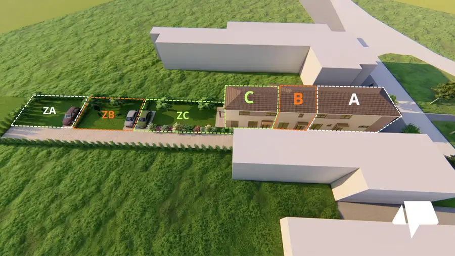
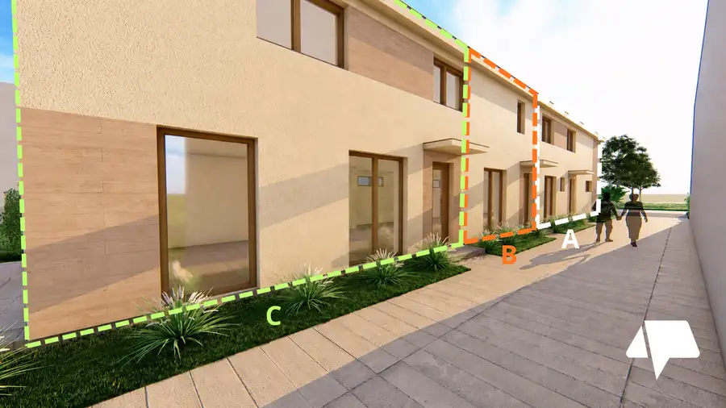
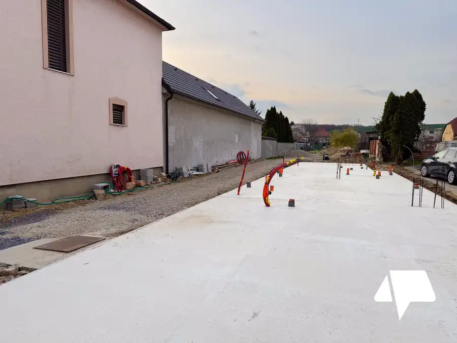
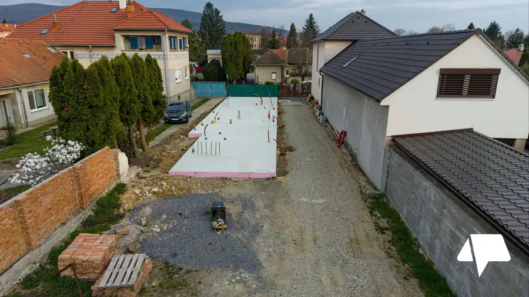
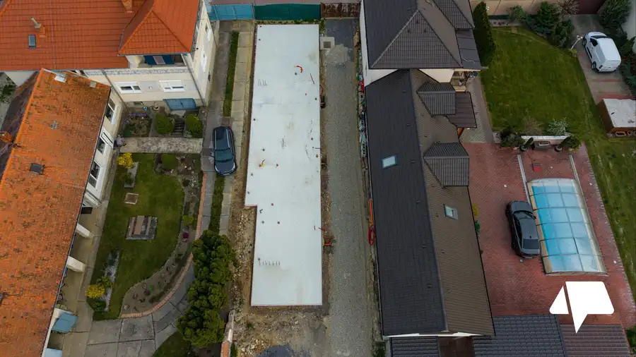
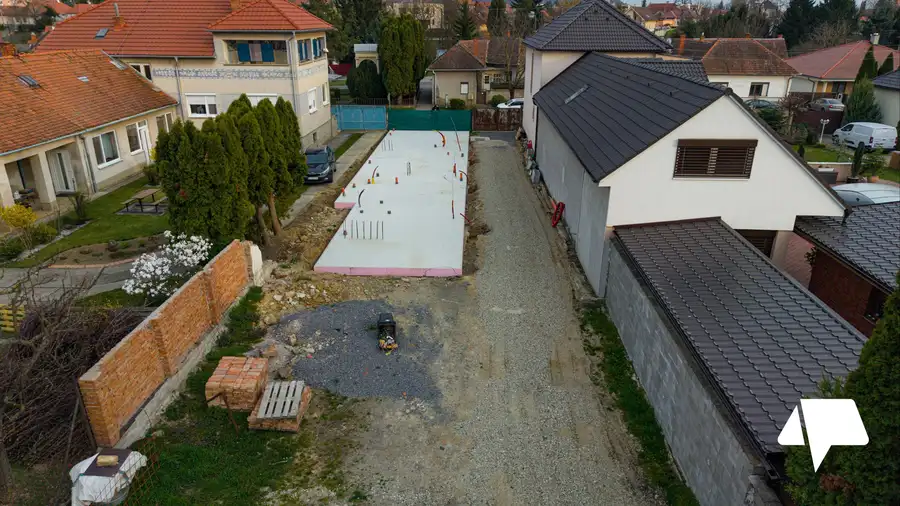
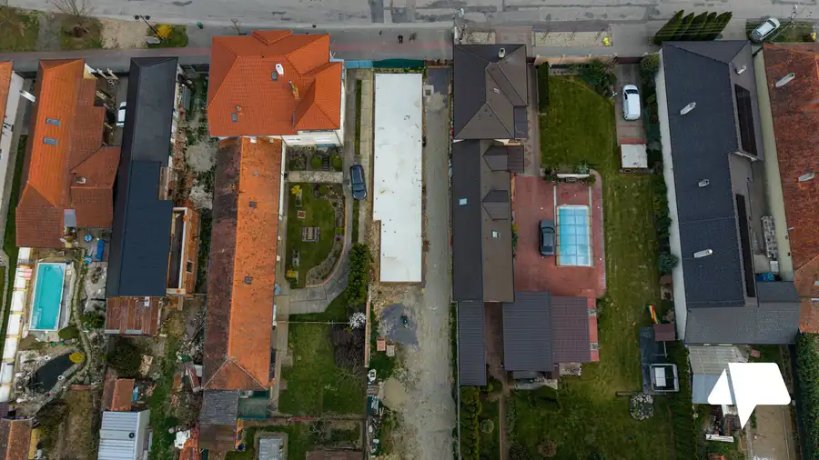

Dom na predaj Topoľčianky
Topoľčianky







- Plocha56 m²
- StavNovostavba
- VlastníctvoOsobné
- Energetická triedaA
O nehnuteľnosti
Moderné bývanie s vlastným pozemkom v obci Topoľčianky. Projekt ponúka len 3 samostatné bytové jednotky v rámci jedného domu – každá s vlastným vstupom a súkromím. Tento inzerát predstavuje najdostupnejší Dom BZÁKLADNÉ INFORMÁCIE2-izbový tehlovýúžitková plocha: 55,63 m²pozemok: 84 m²stav: holodom (vo výstavbe)kolaudácia: 2027súkromný vstup + vlastná záhrada / parkovanieDISPOZÍCIA:Prízemie:vstupná chodbaobývačka s kuchyňousamostatné WCPoschodie:spálňakúpeľňa s WCFINANCOVANIEplatba rozdelená na 5 častí (20 %)nižšia vstupná investíciaTECHNICKÉ INFO o projekte: tehlová stavbaelektrické podlahové kúrenieprojekt umožňuje rozdelenie aj na 2 bytové jednotkypodiel na prístupovej cesteVIDEO:Cena: 125 000 €0908 698 089kazik@nitrianskereality.comUvedená cena je vrátane provízie realitnej kancelárie. Zabezpečíme Vám kompletný právny a poradenský servis. Naši odborníci v Nitrianskej realitnej kancelárii vám pomôžu aj s finančným poradenstvom a vybavením hypotekárneho úveru. Vypočítajte si výšku mesačnej splátky hypotéky na našej kalkulačke tu: https://profibroker.sk/hypoteka/ Šťastie je doma.ĎALŠIE BYTY V PROJEKTEDom A – 112,7 m² + garáž – 200 000 €Dom C – 73,6 m² + väčší pozemok – 170 000 €
Parametre
- Druh
- Rodinný dom
- Druh domu
- Klasický dom
- Dátum zverejnenia
- 26. 03. 2026
- Energetická náročnosť
- Nízkoenergetický
- Energetický certifikát budovy
- A
- Plocha pozemku
- 84 m²
- Počet nadzemných podlaží
- 1
- Počet vonkajších parkovacích miest
- 2
- Prístupová komunikácia
- Asfaltová
- Rok kolaudácie
- 2027
- Rok výstavby
- 2027
- Stav nehnuteľnosti
- Novostavba
- Terén pozemku
- Rovinatý
- Typ
- Predaj
- Typ konštrukcie
- Tehlová
- Vlastníctvo
- Osobné
- Vybavenie
- Vonkajšie parkovacie miesto
- Vybavenie objektu
- Holopriestor
- Vykurovanie
- Podlahové
- Zariadenie
- Holopriestor
- Zastavaná plocha
- 70 m²
- Úžitková plocha
- 56 m²